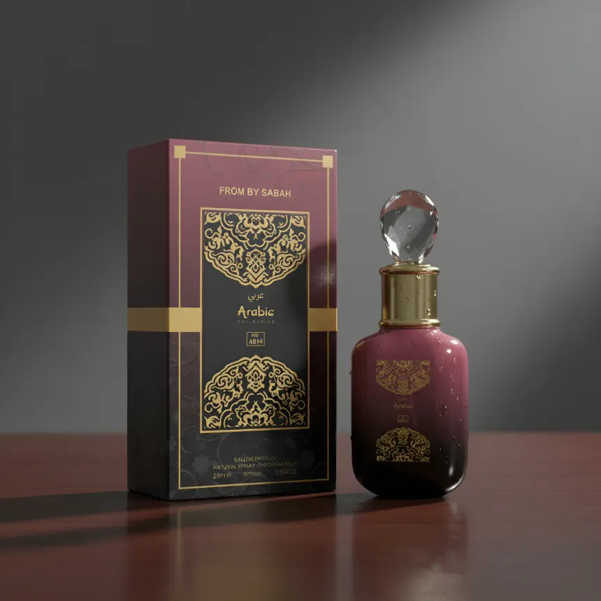
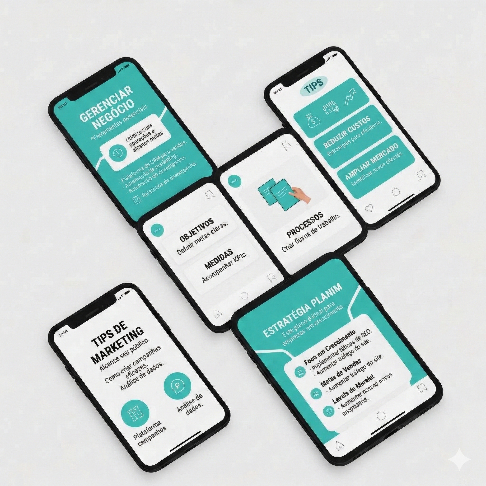
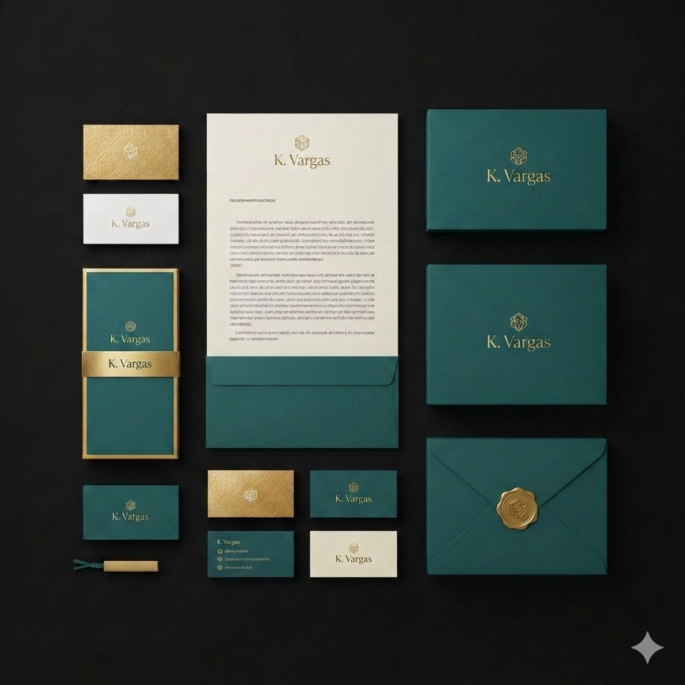

Edicao de Fotos e Design Grafico
Imagens que comunicam, encantam e convertem. Do tratamento de fotos a criação de identidades visuais completas, cada peça e projetada para destacar a sua marca.
O que esta incluso
Design que comunica e converte
Tratamento de Fotos
Correcao de cor, retoque de pele, remocao de fundo e ajustes profissionais para fotos impecaveis.
Manipulacao de Imagem
Composicoes criativas no Photoshop, mockups de produtos e montagens de alto impacto visual.
Thumbnails de Impacto
Thumbnails estrategicas para YouTube e redes sociais que aumentam drasticamente a taxa de clique.
Identidade Visual
Criacao de paleta de cores, tipografia e elementos visuais que definem e fortalecem a identidade da sua marca.
Flyers e Banners
Materiais graficos digitais para campanhas de marketing, lancamentos e promocoes com design de alta conversao.
Carrosseis para Redes
Design de carrosseis educativos e comerciais otimizados para salvar, compartilhar e gerar autoridade.
Ferramentas
Dominio das melhores ferramentas
Exemplos
Projetos de Design

Campanha de Lancamento
Manipulacao de produto no Photoshop e criacao de flyer digital de alta conversao para campanha de marketing.

Carrossel Educativo
Design limpo e atrativo feito no Canva, focado em salvar e compartilhar. Otimizado para engajamento.

Identidade Visual de Marca
Branding completo com cartoes de visita, papelaria e embalagem seguindo uma identidade visual coesa.